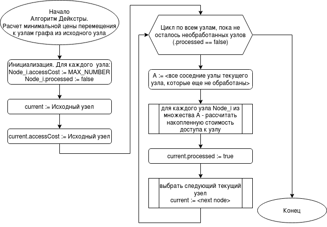
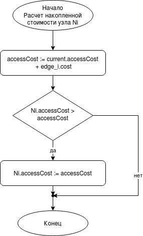

Построить траекторию движения персонажа из точки A в точку Б на карте
1. Алгоритм Дейкстры
2. Адаптация алгоритма Дейкстры к работе на графе - квадратной сетке
3. Решение задач расчета траектории движения
1. Алгоритм Дейкстры
Алгоритм Дейкстры — алгоритм на графах, изобретённый нидерландским учёным Эдсгером Дейкстрой в 1959 году. Находит кратчайшие пути от одной из вершин графа до всех остальных (wikipedia).

1.Алгоритм Дейкстры
Основная часть

1. Алгоритм Дейкстры
Расчет накопленной стоимости узла Ni
1. Алгоритм Дейкстры
2. Адаптация алгоритма Дейкстры к работе на графе - квадратной сетке
3. Решение задач расчета траектории движения, которые возникают при создании 2D-игры
1. Алгоритм Дейкстры
2. Адаптация алгоритма Дейкстры к работе на графе - квадратной сетке
3. Решение задач расчета траектории движения, которые возникают при создании 2D-игры
Доработки реализации
getNext Vertex()
1. Алгоритм Дейкстры
2. Адаптация алгоритма Дейкстры к работе на графе - квадратной сетке
3. Решение задач расчета траектории движения, которые возникают при создании 2D-игры
Что дальше?
Оптимизировать реализацию алгоритма
Добавить поддержку горизонтальных веревок
Добавить компьютерных соперников
Доделать игру
Где еще может пригодиться алгоритм Дейкстры?
Расчет электрических цепей: ток течет по пути наименьшего сопротивления.
Маршрутизация в компьютерных сетях.
Программы-навигаторы: поиск маршрута, чтобы быстрее добраться из точки А в точку Б.
...
Что еще почитать?
A* - развитие алгоритма Дейкстры https://www.redblobgames.com/pathfinding/a-star/introduction.html
Репозиторий с исходниками презентации https://github.com/alexanderpono/ponomarenko-alex-otus/tree/dijkstra-inno/algo-2022-10/dijkstra-inno